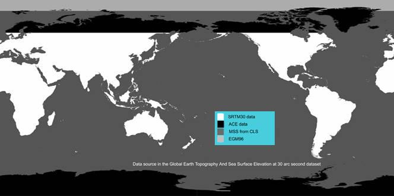

| GETASSE30 Elevation Model | |
GETASSE30 stands for Global Earth Topography And Sea Surface Elevation at 30 arc second resolution. This elevation model has been provided by Marc Bouvet (marc.bouvet@esa.int) of ESA/ESRIN. This documentation is also by courtesy of Marc Bouvet.
The DEM tiles will be downloaded automatically by the software as needed.
GETASSE30 is a composite of four other DEM datasets. It uses the SRTM30 dataset, ACE dataset, Mean Sea Surface (MSS) data and the EGM96 ellipsoid as sources. The resulting GETASSE30 dataset represents the Earth Topography And Sea Surface Elevation with respect to the WGS84 ellipsoid at 30 arc second resolution. The dataset has no missing values, but at the junction of the arctic and antarctic continents there are some tens of strange negative values (down to -700 m) inherent to the ACE dataset. All latitude/longitude values refer to the center of a pixel, not to one of its corners. The GETASSE30 dataset is organised as multiple tiles.

Example of a GETASSE30 tile
| Resolution: | 30 arc second latitude and longitude |
| Unit: | meter |
| File name example: | 45S045W.GETASSE30 where the first number is the latitude of the most South West pixel and the second number its longitude |
| Data format: | binary, 1800*1800 signed 16-bit integer values, big endian order |

The GETASSE30 elevation data
| Resolution: | 30 arc second latitude and longitude |
| Unit: | none |
| File name example: | 45S045W.GETASSE30_flag where the first number is the latitude of the most South West pixel and the second number its longitude |
| Data format: | binary, 1800*1800 unsigned 8-bit integer values, big endian order |

The flag associated to the GETASSE30 data